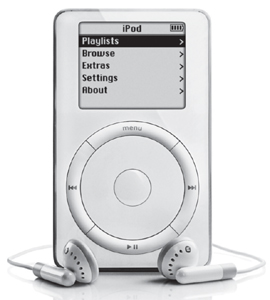

THE DIGITAL HUB
From iTunes to the iPod

The original iPod, 2001
Once a year Jobs took his most valuable employees on a retreat, which he called "The Top 100." They were picked based on a simple guideline: the people you would bring if you could take only a hundred people with you on a lifeboat to your next company. At the end of each retreat, Jobs would stand in front of a whiteboard (he loved whiteboards because they gave him complete control of a situation and they engendered focus) and ask, "What are the ten things we should be doing next?" People would fight to get their suggestions on the list. Jobs would write them down, and then cross off the ones he decreed dumb. After much jockeying, the group would come up with a list of ten. Then Jobs would slash the bottom seven and announce, "We can only do three."
By 2001 Apple had revived its personal computer offerings. It was now time to think different. A set of new possibilities topped the what-next list on his whiteboard that year.
At the time, a pall had descended on the digital realm. The dot-com bubble had burst, and the NASDAQ had fallen more than 50% from its peak. Only three tech companies had ads during the January 2001 Super Bowl, compared to seventeen the year before. But the sense of deflation went deeper. For the twenty-five years since Jobs and Wozniak had founded Apple, the personal computer had been the centerpiece of the digital revolution. Now experts were predicting that its central role was ending. It had "matured into something boring," wrote the Wall Street Journal's Walt Mossberg. Jeff Weitzen, the CEO of Gateway, proclaimed, "We're clearly migrating away from the PC as the centerpiece."
It was at that moment that Jobs launched a new grand strategy that would transform Apple—and with it the entire technology industry. The personal computer, instead of edging toward the sidelines, would become a "digital hub" that coordinated a variety of devices, from music players to video recorders to cameras. You'd link and sync all these devices with your computer, and it would manage your music, pictures, video, text, and all aspects of what Jobs dubbed your "digital lifestyle." Apple would no longer be just a computer company—indeed it would drop that word from its name—but the Macintosh would be reinvigorated by becoming the hub for an astounding array of new gadgets, including the iPod and iPhone and iPad.
When he was turning thirty, Jobs had used a metaphor about record albums. He was musing about why folks over thirty develop rigid thought patterns and tend to be less innovative. "People get stuck in those patterns, just like grooves in a record, and they never get out of them," he said. At age forty-five, Jobs was now about to get out of his groove.
Jobs's vision that your computer could become your digital hub went back to a technology called FireWire, which Apple developed in the early 1990s. It was a high-speed serial port that moved digital files such as video from one device to another. Japanese camcorder makers adopted it, and Jobs decided to include it on the updated versions of the iMac that came out in October 1999. He began to see that FireWire could be part of a system that moved video from cameras onto a computer, where it could be edited and distributed.
To make this work, the iMac needed to have great video editing software. So Jobs went to his old friends at Adobe, the digital graphics company, and asked them to make a new Mac version of Adobe Premiere, which was popular on Windows computers. Adobe's executives stunned Jobs by flatly turning him down. The Macintosh, they said, had too few users to make it worthwhile. Jobs was furious and felt betrayed. "I put Adobe on the map, and they screwed me," he later claimed. Adobe made matters even worse when it also didn't write its other popular programs, such as Photoshop, for the Mac OSX, even though the Macintosh was popular among designers and other creative people who used those applications.
Jobs never forgave Adobe, and a decade later he got into a public war with the company by not permitting Adobe Flash to run on the iPad. He took away a valuable lesson that reinforced his desire for end-to-end control of all key elements of a system: "My primary insight when we were screwed by Adobe in 1999 was that we shouldn't get into any business where we didn't control both the hardware and the software, otherwise we'd get our head handed to us."
So starting in 1999 Apple began to produce application software for the Mac, with a focus on people at the intersection of art and technology. These included Final Cut Pro, for editing digital video; iMovie, which was a simpler consumer version; iDVD, for burning video or music onto a disc; iPhoto, to compete with Adobe Photoshop; GarageBand, for creating and mixing music; iTunes, for managing your songs; and the iTunes Store, for buying songs.
The idea of the digital hub quickly came into focus. "I first understood this with the camcorder," Jobs said. "Using iMovie makes your camcorder ten times more valuable." Instead of having hundreds of hours of raw footage you would never really sit through, you could edit it on your computer, make elegant dissolves, add music, and roll credits, listing yourself as executive producer. It allowed people to be creative, to express themselves, to make something emotional. "That's when it hit me that the personal computer was going to morph into something else."
Jobs had another insight: If the computer served as the hub, it would allow the portable devices to become simpler. A lot of the functions that the devices tried to do, such as editing the video or pictures, they did poorly because they had small screens and could not easily accommodate menus filled with lots of functions. Computers could handle that more easily.
And one more thing ... What Jobs also saw was that this worked best when everything—the device, computer, software, applications, FireWire—was all tightly integrated. "I became even more of a believer in providing end-to-end solutions," he recalled.
The beauty of this realization was that there was only one company that was well-positioned to provide such an integrated approach. Microsoft wrote software, Dell and Compaq made hardware, Sony produced a lot of digital devices, Adobe developed a lot of applications. But only Apple did all of these things. "We're the only company that owns the whole widget—the hardware, the software and the operating system," he explained to Time. "We can take full responsibility for the user experience. We can do things that the other guys can't do."
Apple's first integrated foray into the digital hub strategy was video. With FireWire, you could get your video onto your Mac, and with iMovie you could edit it into a masterpiece. Then what? You'd want to burn some DVDs so you and your friends could watch it on a TV. "So we spent a lot of time working with the drive manufacturers to get a consumer drive that could burn a DVD," he said. "We were the first to ever ship that." As usual Jobs focused on making the product as simple as possible for the user, and this was the key to its success. Mike Evangelist, who worked at Apple on software design, recalled demonstrating to Jobs an early version of the interface. After looking at a bunch of screenshots, Jobs jumped up, grabbed a marker, and drew a simple rectangle on a whiteboard. "Here's the new application," he said. "It's got one window. You drag your video into the window. Then you click the button that says ‘Burn.' That's it. That's what we're going to make." Evangelist was dumbfounded, but it led to the simplicity of what became iDVD. Jobs even helped design the "Burn" button icon.
Jobs knew digital photography was also about to explode, so Apple developed ways to make the computer the hub of your photos. But for the first year at least, he took his eye off one really big opportunity. HP and a few others were producing a drive that burned music CDs, but Jobs decreed that Apple should focus on video rather than music. In addition, his angry insistence that the iMac get rid of its tray disk drive and use instead a more elegant slot drive meant that it could not include the first CD burners, which were initially made for the tray format. "We kind of missed the boat on that," he recalled. "So we needed to catch up real fast."
The mark of an innovative company is not only that it comes up with new ideas first, but also that it knows how to leapfrog when it finds itself behind.
It didn't take Jobs long to realize that music was going to be huge. By 2000 people were ripping music onto their computers from CDs, or downloading it from file-sharing services such as Napster, and burning playlists onto their own blank disks. That year the number of blank CDs sold in the United States was 320 million. There were only 281 million people in the country. That meant some people were really into burning CDs, and Apple wasn't catering to them. "I felt like a dope," he told Fortune. "I thought we had missed it. We had to work hard to catch up."
Jobs added a CD burner to the iMac, but that wasn't enough. His goal was to make it simple to transfer music from a CD, manage it on your computer, and then burn playlists. Other companies were already making music-management applications, but they were clunky and complex. One of Jobs's talents was spotting markets that were filled with second-rate products. He looked at the music apps that were available—including Real Jukebox, Windows Media Player, and one that HP was including with its CD burner—and came to a conclusion: "They were so complicated that only a genius could figure out half of their features."
That is when Bill Kincaid came in. A former Apple software engineer, he was driving to a track in Willows, California, to race his Formula Ford sports car while (a bit incongruously) listening to National Public Radio. He heard a report about a portable music player called the Rio that played a digital song format called MP3. He perked up when the reporter said something like, "Don't get excited, Mac users, because it won't work with Macs." Kincaid said to himself, "Ha! I can fix that!"
To help him write a Rio manager for the Mac, he called his friends Jeff Robbin and Dave Heller, also former Apple software engineers. Their product, known as SoundJam, offered Mac users an interface for the Rio and software for managing the songs on their computer. In July 2000, when Jobs was pushing his team to come up with music-management software, Apple swooped in and bought SoundJam, bringing its founders back into the Apple fold. (All three stayed with the company, and Robbin continued to run the music software development team for the next decade. Jobs considered Robbin so valuable he once allowed a Time reporter to meet him only after extracting the promise that the reporter would not print his last name.)
Jobs personally worked with them to transform SoundJam into an Apple product. It was laden with all sorts of features, and consequently a lot of complex screens. Jobs pushed them to make it simpler and more fun. Instead of an interface that made you specify whether you were searching for an artist, song, or album, Jobs insisted on a simple box where you could type in anything you wanted. From iMovie the team adopted the sleek brushed-metal look and also a name. They dubbed it iTunes.
Jobs unveiled iTunes at the January 2001 Macworld as part of the digital hub strategy. It would be free to all Mac users, he announced. "Join the music revolution with iTunes, and make your music devices ten times more valuable," he concluded to great applause. As his advertising slogan would later put it: Rip. Mix. Burn.
That afternoon Jobs happened to be meeting with John Markoff of the New York Times. The interview was going badly, but at the end Jobs sat down at his Mac and showed off iTunes. "It reminds me of my youth," he said as the psychedelic patterns danced on the screen. That led him to reminisce about dropping acid. Taking LSD was one of the two or three most important things he'd done in his life, Jobs told Markoff. People who had never taken acid would never fully understand him.
The next step for the digital hub strategy was to make a portable music player. Jobs realized that Apple had the opportunity to design such a device in tandem with the iTunes software, allowing it to be simpler. Complex tasks could be handled on the computer, easy ones on the device. Thus was born the iPod, the device that would begin the transformation of Apple from being a computer maker into being the world's most valuable company.
Jobs had a special passion for the project because he loved music. The music players that were already on the market, he told his colleagues, "truly sucked." Phil Schiller, Jon Rubinstein, and the rest of the team agreed. As they were building iTunes, they spent time with the Rio and other players while merrily trashing them. "We would sit around and say, ‘These things really stink,'" Schiller recalled. "They held about sixteen songs, and you couldn't figure out how to use them."
Jobs began pushing for a portable music player in the fall of 2000, but Rubinstein responded that the necessary components were not available yet. He asked Jobs to wait. After a few months Rubinstein was able to score a suitable small LCD screen and rechargeable lithium-polymer battery. The tougher challenge was finding a disk drive that was small enough but had ample memory to make a great music player. Then, in February 2001, he took one of his regular trips to Japan to visit Apple's suppliers.
At the end of a routine meeting with Toshiba, the engineers mentioned a new product they had in the lab that would be ready by that June. It was a tiny, 1.8-inch drive (the size of a silver dollar) that would hold five gigabytes of storage (about a thousand songs), and they were not sure what to do with it. When the Toshiba engineers showed it to Rubinstein, he knew immediately what it could be used for. A thousand songs in his pocket! Perfect. But he kept a poker face. Jobs was also in Japan, giving the keynote speech at the Tokyo Macworld conference. They met that night at the Hotel Okura, where Jobs was staying. "I know how to do it now," Rubinstein told him. "All I need is a $10 million check." Jobs immediately authorized it. So Rubinstein started negotiating with Toshiba to have exclusive rights to every one of the disks it could make, and he began to look around for someone who could lead the development team.
Tony Fadell was a brash entrepreneurial programmer with a cyberpunk look and an engaging smile who had started three companies while still at the University of Michigan. He had gone to work at the handheld device maker General Magic (where he met Apple refugees Andy Hertzfeld and Bill Atkinson), and then spent some awkward time at Philips Electronics, where he bucked the staid culture with his short bleached hair and rebellious style. He had come up with some ideas for creating a better digital music player, which he had shopped around unsuccessfully to RealNetworks, Sony, and Philips. One day he was in Colorado, skiing with an uncle, and his cell phone rang while he was riding on the chairlift. It was Rubinstein, who told him that Apple was looking for someone who could work on a "small electronic device." Fadell, not lacking in confidence, boasted that he was a wizard at making such devices. Rubinstein invited him to Cupertino.
Fadell assumed that he was being hired to work on a personal digital assistant, some successor to the Newton. But when he met with Rubinstein, the topic quickly turned to iTunes, which had been out for three months. "We've been trying to hook up the existing MP3 players to iTunes and they've been horrible, absolutely horrible," Rubinstein told him. "We think we should make our own version."
Fadell was thrilled. "I was passionate about music. I was trying to do some of that at RealNetworks, and I was pitching an MP3 player to Palm." He agreed to come aboard, at least as a consultant. After a few weeks Rubinstein insisted that if he was to lead the team, he had to become a full-time Apple employee. But Fadell resisted; he liked his freedom. Rubinstein was furious at what he considered Fadell's whining. "This is one of those life decisions," he told Fadell. "You'll never regret it."
He decided to force Fadell's hand. He gathered a roomful of the twenty or so people who had been assigned to the project. When Fadell walked in, Rubinstein told him, "Tony, we're not doing this project unless you sign on full-time. Are you in or out? You have to decide right now."
Fadell looked Rubinstein in the eye, then turned to the audience and said, "Does this always happen at Apple, that people are put under duress to sign an offer?" He paused for a moment, said yes, and grudgingly shook Rubinstein's hand. "It left some very unsettling feeling between Jon and me for many years," Fadell recalled. Rubinstein agreed: "I don't think he ever forgave me for that."
Fadell and Rubinstein were fated to clash because they both thought that they had fathered the iPod. As Rubinstein saw it, he had been given the mission by Jobs months earlier, found the Toshiba disk drive, and figured out the screen, battery, and other key elements. He had then brought in Fadell to put it together. He and others who resented Fadell's visibility began to refer to him as "Tony Baloney." But from Fadell's perspective, before he came to Apple he had already come up with plans for a great MP3 player, and he had been shopping it around to other companies before he had agreed to come to Apple. The issue of who deserved the most credit for the iPod, or should get the title Podfather, would be fought over the years in interviews, articles, web pages, and even Wikipedia entries.
But for the next few months they were too busy to bicker. Jobs wanted the iPod out by Christmas, and this meant having it ready to unveil in October. They looked around for other companies that were designing MP3 players that could serve as the foundation for Apple's work and settled on a small company named PortalPlayer. Fadell told the team there, "This is the project that's going to remold Apple, and ten years from now, it's going to be a music business, not a computer business." He convinced them to sign an exclusive deal, and his group began to modify PortalPlayer's deficiencies, such as its complex interfaces, short battery life, and inability to make a playlist longer than ten songs.
There are certain meetings that are memorable both because they mark a historic moment and because they illuminate the way a leader operates. Such was the case with the gathering in Apple's fourth-floor conference room in April 2001, where Jobs decided on the fundamentals of the iPod. There to hear Fadell present his proposals to Jobs were Rubinstein, Schiller, Ive, Jeff Robbin, and marketing director Stan Ng. Fadell didn't know Jobs, and he was understandably intimidated. "When he walked into the conference room, I sat up and thought, ‘Whoa, there's Steve!' I was really on guard, because I'd heard how brutal he could be."
The meeting started with a presentation of the potential market and what other companies were doing. Jobs, as usual, had no patience. "He won't pay attention to a slide deck for more than a minute," Fadell said. When a slide showed other possible players in the market, he waved it away. "Don't worry about Sony," he said. "We know what we're doing, and they don't." After that, they quit showing slides, and instead Jobs peppered the group with questions. Fadell took away a lesson: "Steve prefers to be in the moment, talking things through. He once told me, ‘If you need slides, it shows you don't know what you're talking about.'"
Instead Jobs liked to be shown physical objects that he could feel, inspect, and fondle. So Fadell brought three different models to the conference room; Rubinstein had coached him on how to reveal them sequentially so that his preferred choice would be the pièce de résistance. They hid the mockup of that option under a wooden bowl at the center of the table.
Fadell began his show-and-tell by taking the various parts they were using out of a box and spreading them on the table. There were the 1.8-inch drive, LCD screen, boards, and batteries, all labeled with their cost and weight. As he displayed them, they discussed how the prices or sizes might come down over the next year or so. Some of the pieces could be put together, like Lego blocks, to show the options.
Then Fadell began unveiling his models, which were made of Styrofoam with fishing leads inserted to give them the proper weight. The first had a slot for a removable memory card for music. Jobs dismissed it as complicated. The second had dynamic RAM memory, which was cheap but would lose all of the songs if the battery ran out. Jobs was not pleased. Next Fadell put a few of the pieces together to show what a device with the 1.8-inch hard drive would be like. Jobs seemed intrigued. The show climaxed with Fadell lifting the bowl and revealing a fully assembled model of that alternative. "I was hoping to be able to play more with the Lego parts, but Steve settled right on the hard-drive option just the way we had modeled it," Fadell recalled. He was rather stunned by the process. "I was used to being at Philips, where decisions like this would take meeting after meeting, with a lot of PowerPoint presentations and going back for more study."
Next it was Phil Schiller's turn. "Can I bring out my idea now?" he asked. He left the room and returned with a handful of iPod models, all of which had the same device on the front: the soon-to-be-famous trackwheel. "I had been thinking of how you go through a playlist," he recalled. "You can't press a button hundreds of times. Wouldn't it be great if you could have a wheel?" By turning the wheel with your thumb, you could scroll through songs. The longer you kept turning, the faster the scrolling got, so you could zip through hundreds easily. Jobs shouted, "That's it!" He got Fadell and the engineers working on it.
Once the project was launched, Jobs immersed himself in it daily. His main demand was "Simplify!" He would go over each screen of the user interface and apply a rigid test: If he wanted a song or a function, he should be able to get there in three clicks. And the click should be intuitive. If he couldn't figure out how to navigate to something, or if it took more than three clicks, he would be brutal. "There would be times when we'd rack our brains on a user interface problem, and think we'd considered every option, and he would go, ‘Did you think of this?'" said Fadell. "And then we'd all go, ‘Holy shit.' He'd redefine the problem or approach, and our little problem would go away."
Every night Jobs would be on the phone with ideas. Fadell and the others would call each other up, discuss Jobs's latest suggestion, and conspire on how to nudge him to where they wanted him to go, which worked about half the time. "We would have this swirling thing of Steve's latest idea, and we would all try to stay ahead of it," said Fadell. "Every day there was something like that, whether it was a switch here, or a button color, or a pricing strategy issue. With his style, you needed to work with your peers, watch each other's back."
One key insight Jobs had was that as many functions as possible should be performed using iTunes on your computer rather than on the iPod. As he later recalled:
In order to make the iPod really easy to use—and this took a lot of arguing on my part—we needed to limit what the device itself would do. Instead we put that functionality in iTunes on the computer. For example, we made it so you couldn't make playlists using the device. You made playlists on iTunes, and then you synced with the device. That was controversial. But what made the Rio and other devices so brain-dead was that they were complicated. They had to do things like make playlists, because they weren't integrated with the jukebox software on your computer. So by owning the iTunes software and the iPod device, that allowed us to make the computer and the device work together, and it allowed us to put the complexity in the right place.
The most Zen of all simplicities was Jobs's decree, which astonished his colleagues, that the iPod would not have an on-off switch. It became true of most Apple devices. There was no need for one. Apple's devices would go dormant if they were not being used, and they would wake up when you touched any key. But there was no need for a switch that would go "Click—you're off. Good-bye."
Suddenly everything had fallen into place: a drive that would hold a thousand songs; an interface and scroll wheel that would let you navigate a thousand songs; a FireWire connection that could sync a thousand songs in under ten minutes; and a battery that would last through a thousand songs. "We suddenly were looking at one another and saying, ‘This is going to be so cool,'" Jobs recalled. "We knew how cool it was, because we knew how badly we each wanted one personally. And the concept became so beautifully simple: a thousand songs in your pocket." One of the copywriters suggested they call it a "Pod." Jobs was the one who, borrowing from the iMac and iTunes names, modified that to iPod.
Jony Ive had been playing with the foam model of the iPod and trying to conceive what the finished product should look like when an idea occurred to him on a morning drive from his San Francisco home to Cupertino. Its face should be pure white, he told his colleague in the car, and it should connect seamlessly to a polished stainless steel back. "Most small consumer products have this disposable feel to them," said Ive. "There is no cultural gravity to them. The thing I'm proudest of about the iPod is that there is something about it that makes it feel significant, not disposable."
The white would be not just white, but pure white. "Not only the device, but the headphones and the wires and even the power block," he recalled. "Pure white." Others kept arguing that the headphones, of course, should be black, like all headphones. "But Steve got it immediately, and embraced white," said Ive. "There would be a purity to it." The sinuous flow of the white earbud wires helped make the iPod an icon. As Ive described it:
There was something very significant and nondisposable about it, yet there was also something very quiet and very restrained. It wasn't wagging its tail in your face. It was restrained, but it was also crazy, with those flowing headphones. That's why I like white. White isn't just a neutral color. It is so pure and quiet. Bold and conspicuous and yet so inconspicuous as well.
Lee Clow's advertising team at TBWA\Chiat\Day wanted to celebrate the iconic nature of the iPod and its whiteness rather than create more traditional product-introduction ads that showed off the device's features. James Vincent, a lanky young Brit who had played in a band and worked as a DJ, had recently joined the agency, and he was a natural to help focus Apple's advertising on hip millennial-generation music lovers rather than rebel baby boomers. With the help of the art director Susan Alinsangan, they created a series of billboards and posters for the iPod, and they spread the options on Jobs's conference room table for his inspection.
At the far right end they placed the most traditional options, which featured straightforward photos of the iPod on a white background. At the far left end they placed the most graphic and iconic treatments, which showed just a silhouette of someone dancing while listening to an iPod, its white earphone wires waving with the music. "It understood your emotional and intensely personal relationship with the music," Vincent said. He suggested to Duncan Milner, the creative director, that they all stand firmly at the far left end, to see if they could get Jobs to gravitate there. When he walked in, he went immediately to the right, looking at the stark product pictures. "This looks great," he said. "Let's talk about these." Vincent, Milner, and Clow did not budge from the other end. Finally, Jobs looked up, glanced at the iconic treatments, and said, "Oh, I guess you like this stuff." He shook his head. "It doesn't show the product. It doesn't say what it is." Vincent proposed that they use the iconic images but add the tagline, "1,000 songs in your pocket." That would say it all. Jobs glanced back toward the right end of the table, then finally agreed. Not surprisingly he was soon claiming that it was his idea to push for the more iconic ads. "There were some skeptics around who asked, ‘How's this going to actually sell an iPod?'" Jobs recalled. "That's when it came in handy to be the CEO, so I could push the idea through."
Jobs realized that there was yet another advantage to the fact that Apple had an integrated system of computer, software, and device. It meant that sales of the iPod would drive sales of the iMac. That, in turn, meant that he could take money that Apple was spending on iMac advertising and shift it to spending on iPod ads—getting a double bang for the buck. A triple bang, actually, because the ads would lend luster and youthfulness to the whole Apple brand. He recalled:
I had this crazy idea that we could sell just as many Macs by advertising the iPod. In addition, the iPod would position Apple as evoking innovation and youth. So I moved $75 million of advertising money to the iPod, even though the category didn't justify one hundredth of that. That meant that we completely dominated the market for music players. We outspent everybody by a factor of about a hundred.
The television ads showed the iconic silhouettes dancing to songs picked by Jobs, Clow, and Vincent. "Finding the music became our main fun at our weekly marketing meetings," said Clow. "We'd play some edgy cut, Steve would say, ‘I hate that,' and James would have to talk him into it." The ads helped popularize many new bands, most notably the Black Eyed Peas; the ad with "Hey Mama" is the classic of the silhouettes genre. When a new ad was about to go into production, Jobs would often have second thoughts, call up Vincent, and insist that he cancel it. "It sounds a bit poppy" or "It sounds a bit trivial," he would say. "Let's call it off." James would get flustered and try to talk him around. "Hold on, it's going to be great," he would argue. Invariably Jobs would relent, the ad would be made, and he would love it.
Jobs unveiled the iPod on October 23, 2001, at one of his signature product launch events. "Hint: It's not a Mac," the invitation teased. When it came time to reveal the product, after he described its technical capabilities, Jobs did not do his usual trick of walking over to a table and pulling off a velvet cloth. Instead he said, "I happen to have one right here in my pocket." He reached into his jeans and pulled out the gleaming white device. "This amazing little device holds a thousand songs, and it goes right in my pocket." He slipped it back in and ambled offstage to applause.
Initially there was some skepticism among tech geeks, especially about the $399 price. In the blogosphere, the joke was that iPod stood for "idiots price our devices." However, consumers soon made it a hit. More than that, the iPod became the essence of everything Apple was destined to be: poetry connected to engineering, arts and creativity intersecting with technology, design that's bold and simple. It had an ease of use that came from being an integrated end-to-end system, from computer to FireWire to device to software to content management. When you took an iPod out of the box, it was so beautiful that it seemed to glow, and it made all other music players look as if they had been designed and manufactured in Uzbekistan.
Not since the original Mac had a clarity of product vision so propelled a company into the future. "If anybody was ever wondering why Apple is on the earth, I would hold up this as a good example," Jobs told Newsweek's Steve Levy at the time. Wozniak, who had long been skeptical of integrated systems, began to revise his philosophy. "Wow, it makes sense that Apple was the one to come up with it," Wozniak enthused after the iPod came out. "After all, Apple's whole history is making both the hardware and the software, with the result that the two work better together."
The day that Levy got his press preview of the iPod, he happened to be meeting Bill Gates at a dinner, and he showed it to him. "Have you seen this yet?" Levy asked. Levy noted, "Gates went into a zone that recalls those science fiction films where a space alien, confronted with a novel object, creates some sort of force tunnel between him and the object, allowing him to suck directly into his brain all possible information about it." Gates played with the scroll wheel and pushed every button combination, while his eyes stared fixedly at the screen. "It looks like a great product," he finally said. Then he paused and looked puzzled. "It's only for Macintosh?" he asked.